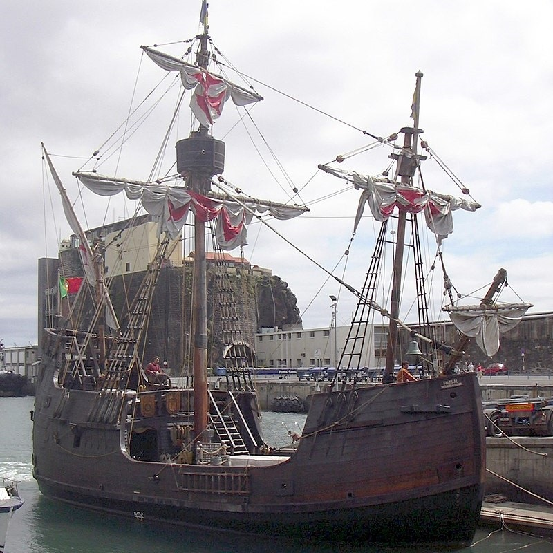

Historia żaglowców cz.3
Karawela – w XV-XVII wieku oznaczała jednopokładowy, dwu lub trójmasztowy żaglowiec o wysokich nadbudówkach (tzw. kasztel) na dziobie i rufie. Ze względu na swą szybkość, stateczność oraz bezpieczeństwo karawele umożliwiały dłuższe podróże morskie, co uczyniło je przydatnymi do wypraw odkrywczych. Floty wojenne Hiszpanii i Portugalii używały karawel na ogół do celów rozpoznawczych.
Podstawową zaletą karaweli, ze względu na którą przypisuje się jej zrewolucjonizowanie europejskich podróży odkrywczych, była zdolność do żeglowania pod ostrym kątem do kierunku wiatru.
Karawela zawdzięczała to zastosowaniu ożaglowania skośnego i profilowi kadłuba. Dzięki temu statek mógł halsować na wiatr (tzw. lawirowanie). Pozwalało to na podróże daleko na południe, wzdłuż zachodnich wybrzeży Afryki, gdzie okresowo dominują wiatry południowe, a więc niesprzyjające dla żeglujących z Europy statków. Krzysztof Kolumb wykorzystał w swojej pierwszej wyprawie dwie karawele: "Pinta" i "Niña".